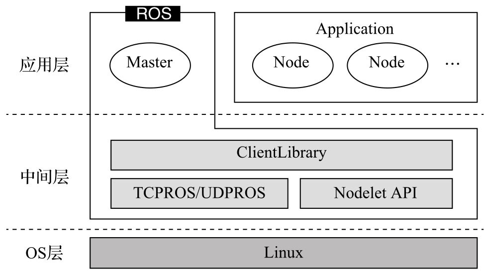

前言
在上一篇文章中，我们谈到了怎么在 Arch 系的 Linux 上安装 ROS ，这只是入门的第一步，接下来我们要来了解 ROS 的文件系统。
ROS架构
安装 ROS 时我们知道， ROS 和传统意义上的操作系统不一样，它不是直接运行在硬件上的，而是安装在操作系统之上的一个软件。它提供了许多工具和软件库，并且还有类似操作系统硬件抽象、软件包管理，开发工具链等，所以我们可以认为它是一个操作系统。
在大型项目中，为了更好的扩展功能，会把不同的功能分为不同的层。在 ROS 架构中分为三层，分别是基于 Linux 系统的 OS 层、实现 ROS 核心通信机制以及众多机器人开发库的中间层、在 ROS Master 管理下保证功能节点的正常运行的应用层。如下所示：

ROS 文件系统
在了解了 ROS 的架构之后，我们来了解 ROS 的文件系统，所谓文件系统就是把各种文件按照一定的组织放到特定的目录中，当系统要某些文件的时候才知道要去哪里找，不然就算系统中存在这个文件，系统也是不知道的。
我们先通过下面这张图来了解， ROS 是怎么组织文件的。
元功能包是功能包的一个集合，里面存放着多个功能包。这些功能包功能相近，也可能相互依赖。比如： navigation 功能包。
元功能包在开发一个大型的功能时比较常用，这样的功能往往需要很多功能包，包括一些第三方的，我们可以通过元功能包一次性把这些包安装好。
元功能包也可以给一系列功能包取一个别名，这样别人通过这个别名就能把所有的依赖都安装好，而不要一个一个的单独去安装。
在元功能包中通常只包含两个文件一个是 CMakeLists.txt 和 package.xml
以 navigation 为例： CMakeLists.txt 如下
1
2
3
4
|
cmake_minimum_required(VERSION 2.8.3)
project(navigation)
find_package(catkin REQUIRED)
catkin_metapackage() # 元功能包特有，用来告诉编译器这是一个元功能包
|
package.xml 如下
1
2
3
4
5
6
7
8
9
10
11
12
13
14
15
16
17
18
19
20
21
22
23
24
25
26
27
28
29
30
31
32
33
34
35
36
37
38
39
40
41
42
|
<?xml version="1.0"?>
<?xml-model href="http://download.ros.org/schema/package_format2.xsd" schematypens="http://www.w3.org/2001/XMLSchema"?>
<package format="2">
<name>navigation</name>
<version>1.16.6</version>
<description>
A 2D navigation stack that takes in information from odometry, sensor
streams, and a goal pose and outputs safe velocity commands that are sent
to a mobile base.
</description>
<maintainer email="mfergs7@gmail.com">Michael Ferguson</maintainer>
<maintainer email="davidvlu@gmail.com">David V. Lu!!</maintainer>
<maintainer email="ahoy@fetchrobotics.com">Aaron Hoy</maintainer>
<author>contradict@gmail.com</author>
<author>Eitan Marder-Eppstein</author>
<license>BSD,LGPL,LGPL (amcl)</license>
<url>http://wiki.ros.org/navigation</url>
<buildtool_depend>catkin</buildtool_depend>
<exec_depend>amcl</exec_depend>
<exec_depend>base_local_planner</exec_depend>
<exec_depend>carrot_planner</exec_depend>
<exec_depend>clear_costmap_recovery</exec_depend>
<exec_depend>costmap_2d</exec_depend>
<exec_depend>dwa_local_planner</exec_depend>
<exec_depend>fake_localization</exec_depend>
<exec_depend>global_planner</exec_depend>
<exec_depend>map_server</exec_depend>
<exec_depend>move_base</exec_depend>
<exec_depend>move_base_msgs</exec_depend>
<exec_depend>move_slow_and_clear</exec_depend>
<exec_depend>navfn</exec_depend>
<exec_depend>nav_core</exec_depend>
<exec_depend>rotate_recovery</exec_depend>
<exec_depend>voxel_grid</exec_depend>
<!-- 元功能包固定写法 -->
<export>
<metapackage/>
</export>
</package>
|
要注意在 package.xml 中需要用
1
2
3
|
<export>
<metapackage/>
</export>
|
来指定是元功能包，这是固定写法。
元功能包在老版本也叫 stack (功能包集)，都是一个意思。
功能包
功能包是 ROS 软件的基本单元，功能包中包含了一个或多个节点、库、配置文件、源代码等，是ROS软件中基本的构成项和发布项。
功能包清单(package.xml)
每个包都必须包含一个 package.xml 的功能包清单文件，里面记录了包的基本信息、作者信息、许可信息、依赖选项、编译标志等。
消息(msg)
消息是 ROS 节点之间发布/订阅之间的通信消息，文件通常以 .msg 结尾。 ROS 定义了一些基本的消息类型，我们也可以自定义消息。
服务(srv)
服务是 ROS 中另一种通信方式的数据类型，文件通常以 .srv 结尾。同样的 ROS 也定义了一些基本的类型，也支持自定义类型。
代码(src)
代码是用来存放 C++ 文件的目录， ROS 还支持 python 来编写，通常放在 scripts 目录下。
关于功能包我们就先了解这么多，之后我们会在工作空间中详细介绍，先有一个大概的印象。
ROS 文件系统工具
ROS 中有非常多的包，我们在使用的时候不可能每个都记住它们所在的位置，所有在 ROS 中提供了一些命令行工具方便我们使用这些 package 。
rospack
rospack 是一个用来查找 package 的工具，它可以定位 package 安装的位置。例如，我们使用它查找 roscpp 可以得到 roscpp 的安装位置
1
2
|
➜ ~ rospack find roscpp
/opt/ros/melodic/share/roscpp
|
除了查找 package 的位置，还可以通过 rospack list 列出所有的 package
1
2
3
4
5
6
7
8
9
10
11
12
13
14
15
|
➜ ~ rospack list
actionlib /opt/ros/melodic/share/actionlib
actionlib_msgs /opt/ros/melodic/share/actionlib_msgs
actionlib_tutorials /opt/ros/melodic/share/actionlib_tutorials
angles /opt/ros/melodic/share/angles
bond /opt/ros/melodic/share/bond
bondcpp /opt/ros/melodic/share/bondcpp
bondpy /opt/ros/melodic/share/bondpy
camera_calibration /opt/ros/melodic/share/camera_calibration
camera_calibration_parsers /opt/ros/melodic/share/camera_calibration_parsers
camera_info_manager /opt/ros/melodic/share/camera_info_manager
catkin /opt/ros/melodic/share/catkin
class_loader /opt/ros/melodic/share/class_loader
cmake_modules /opt/ros/melodic/share/cmake_modules
...
|
在 rospack 中还有一个比较常用的是，查看 package 的依赖
1
2
3
4
5
6
7
8
9
10
11
12
13
14
15
16
17
18
19
|
➜ ~ rospack depends roscpp
cpp_common
rostime
roscpp_traits
roscpp_serialization
catkin
genmsg
genpy
message_runtime
gencpp
geneus
gennodejs
genlisp
message_generation
rosbuild
rosconsole
std_msgs
rosgraph_msgs
xmlrpcpp
|
上面列出来的是比较常用的，更多的用法可以通过 rospack help 来查看
roscd
在 Linux 中 cd 用来切换目录，在 ROS 中也有类似的命令，也就是 roscd 。使用 roscd 会自动帮你切换到 ROS 对应包的安装目录下。
1
2
3
4
5
|
➜ ~ pwd
/home/test
➜ ~ roscd roscpp
➜ pwd
/opt/ros/melodic/share/roscpp
|
当然你用 cd 也是可以进入到 roscpp 目录的，只是比较麻烦而已。
rosls
rosls 和 ls 命令类似，用来列出 package 下的文件
1
2
|
➜ rosls roscpp
cmake msg package.xml rosbuild srv
|
总结
了解 ROS 架构和文件系统对于初学者来说是十分有必要的，你会知道 ROS 是怎么划分它们的，不同的文件存放在哪里，我需要的功能去哪里找，怎么快速定位它们。
了解了这些，日后使用时可以大大提高查找的效率，也为编写自己的 package 打下了基础。
参考